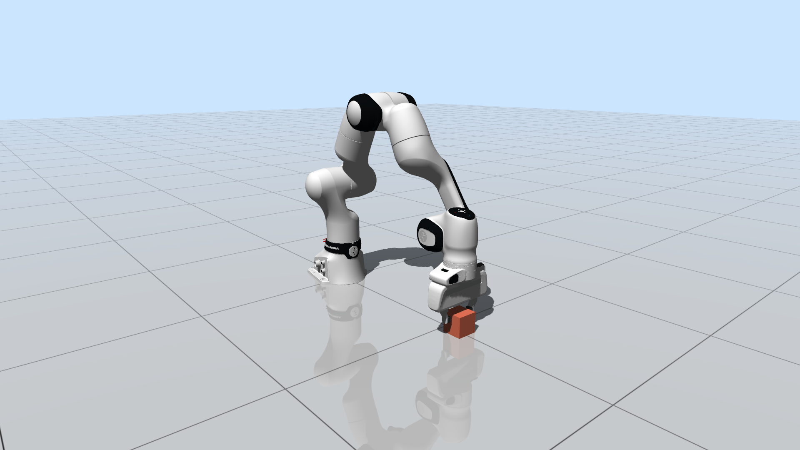
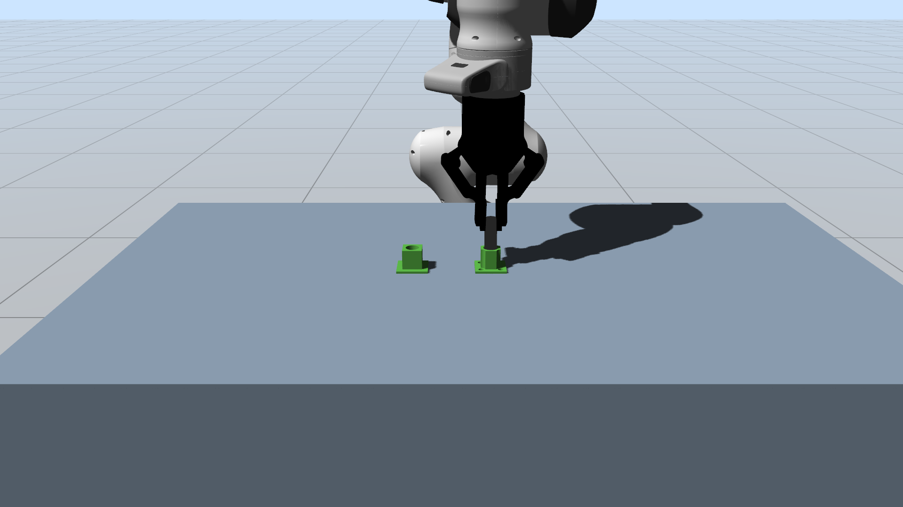
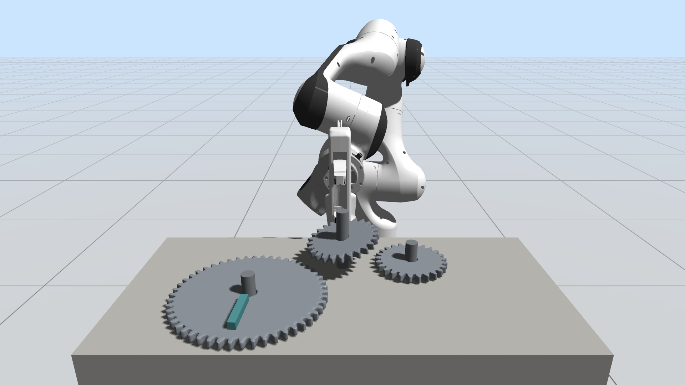

Geometry Modeling
Primitives, convex shapes, meshes, signed distance fields, and differentiable support functions.
Documentation
CRISP provides release packages, examples, and integration materials for complex multi-contact scenarios including insertion, grasping, gears, and bolt-nut assembly.
Configure and build the examples from the repository root. CMake downloads the latest CRISP release package for your platform by default.
cmake -S . -B build
cmake --build buildTo use the bundled Eigen dependency, configure with -Dcrisp_use_bundled_eigen=ON.
Primitives, convex shapes, meshes, signed distance fields, and differentiable support functions.
Robust dense multi-contact simulation with solvers including CANAL and SubADMM.
Tight-tolerance insertion, dexterous grasping, articulated robots, gears, and threaded assemblies.

01_franka FR3 robot with a movable box
05_peg_in_hole Peg-in-hole manipulation with mesh and SDF geometry
06_gear_assembly Gear insertion and driving
07_bolt_nut_assembly Bolt-nut assembly with threaded SDF geometry